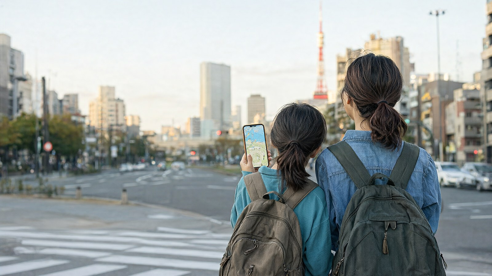

지브리와 디즈니 또는 팀랩을 넣은 초등 자녀 동반 도쿄 3박 4일 일정
도쿄 3박 4일 가족 일정
성인 2명과 초등 자녀 1명이 하네다공항으로 들어와 신주쿠 권역에서 3박 하는 일정입니다. 기준일은 2026-10-22이고, 환율은 100엔=837.81원(2026-10-21, 서울외국환중개 매매기준율)이며 원화 금액은 모두 약입니다. 숙소 권역 선택 이유는 도쿄 여행 가이드의 숙소 권역 표를 따랐습니다.
일정 한눈에 보기
| 일차 | 방문지 (2~3곳) | 이동 | 예약 필수 | 메모 |
|---|---|---|---|---|
| 1일차 | 하네다 도착, 신주쿠 숙소 짐 맡기기, 숙소 근처 산책과 저녁 | 하네다에서 게이큐 공항선과 JR로 신주쿠까지 약 41분 | 없음 | 도착일은 피로를 고려해 가볍게 |
| 2일차 | 지브리 미술관, 신주쿠 쇼핑 | 지브리 미술관은 미타카 쪽, 이동 시간은 확인 필요 | 지브리 미술관 (날짜와 시간 지정) | 오전 입장권을 잡으면 오후가 편함 |
| 3일차 | 디즈니랜드 또는 디즈니씨 한 곳 (안 A), 또는 팀랩 플래닛과 우에노 동물원 (안 B) | 안 A는 JR로 마이하마역까지, 안 B는 시내 전철 | 안 A 디즈니 티켓, 안 B 팀랩 | 안 B의 우에노 동물원은 월요일 휴원 |
| 4일차 | 체크아웃, 면세 쇼핑 정리, 공항 이동 | 신주쿠에서 하네다로 약 41분 | 없음 | 공항에는 출발 2시간 전 이상 도착 목표 |
두 안 중 하나만 고르세요. 한 날에 예약 시설을 두 곳 이상 넣으면 아이가 먼저 지칩니다.
일차별 상세
1일차 도착
- 하네다 도착 후 게이큐 공항선을 타고 시나가와에서 JR 야마노테선으로 갈아타 신주쿠로 갑니다. 성인 편도 590엔, 약 41분입니다 (airport.tokyo). 짐이 많으면 리무진 버스(성인 1,400엔, 약 55분)가 환승이 없어 편합니다. 자세한 비교는 하네다·나리타에서 시내까지 글을 보세요.
- 체크인 전이면 짐을 맡기고 숙소 근처만 걷습니다.
- 저녁은 숙소 근처에서 일찍 먹고 쉽니다. 식당 가격과 예약 규정은 출처로 확인하지 못해 확인 필요입니다.
막차를 확인하세요. 하네다 제3터미널 출발 게이큐 막차는 00:08입니다 (airport.tokyo). 도착이 늦은 비행기라면 이 시각 전에 열차를 타야 합니다.
2일차 지브리 미술관과 신주쿠
- 오전: 지브리 미술관. 모든 입장이 사전 예약제이고 현장 판매는 없습니다. 입장권은 로손 티켓에서 매월 10일 10:00(일본 시간)에 다음 달 분이 판매됩니다. 12월 방문이면 11월 10일입니다 (지브리 미술관 공식). 운영은 10:00~18:00입니다.
- 오후: 신주쿠로 돌아와 쇼핑과 휴식. 면세는 2026년 11월 1일 이후 구매분부터 환급 방식으로 바뀌니 11월 이후 방문이면 아래 귀국 동선을 읽어 두세요.
- 지브리 미술관 입장료는 19세 이상 1,000엔, 7~12세 400엔입니다 (지브리 미술관 공식). 휴관일은 화요일이 많고, 2026년 11월은 4~18일과 24일, 12월은 1·8·15·22일과 27~31일입니다 (지브리 미술관 공식 달력, 2026-10-22 확인). 날짜를 정하기 전에 달력을 다시 확인하세요.
3일차 안 A 디즈니 한 곳
- 하루 종일 한 파크만 갑니다. 티켓은 날짜와 파크를 지정해야 하고, 한 티켓으로 한 파크만 입장합니다 (디즈니 리조트 공식 요금표, VoyageWindow 인용).
- 성인 평일 10,900엔, 일요일 11,900엔, 토요일 12,400엔 (2026년 10월·12월 달력 기준). 어린이(4~11세)는 최저 5,300엔부터입니다.
- 이동: JR 게이요선·무사시노선으로 마이하마역까지 가면 디즈니랜드는 걸어서 약 5분입니다. 디즈니씨는 디즈니 리조트 라인 1회 성인 300엔, 어린이 150엔입니다 (디즈니 리조트 공식).
- 운영시간과 티켓 판매 시점은 확인 필요입니다.
3일차 안 B 팀랩 플래닛과 우에노 동물원
- 팀랩 플래닛은 온라인 판매만 있고 입장 시간이 지정됩니다. 성인 3,800엔부터(날짜별 변동), 4~12세 1,500엔입니다. 취소와 환불은 불가입니다. 13세 미만은 18세 이상 보호자 동반, 어린이 3명당 성인 1명이 필요합니다 (팀랩 공식).
- 우에노 동물원: 성인 600엔, 초등학생 이하 무료입니다. 9:30~17:00, 입장은 16:00까지이고 월요일은 쉽니다(월요일이 공휴일이면 다음 날). 일부 동물은 일찍 실내로 들어가니 동물원을 오전에, 팀랩을 오후에 두는 편이 안전합니다 (우에노 동물원 공식, 작성자 판단). 두 시설 사이 이동 시간은 확인 필요입니다.
- 팀랩 플래닛은 8:00~22:00이고 마지막 입장은 폐관 1시간 전입니다. 2026년 11월 5일(목)과 12월 3일(목)은 휴관입니다 (팀랩 공식).
4일차 귀국
- 체크아웃 후 짐을 숙소에 맡기고 마지막 쇼핑을 한 뒤 공항으로 갑니다.
- 하네다행은 신주쿠에서 약 41분입니다. 출발 2시간 30분 전 도착을 목표로 하면 면세 절차가 있어도 여유가 있습니다.
오후 휴식 지점
- 1일차: 숙소에서 한 시간 이상 쉬기 (체크인이 안 되면 짐 보관 후 근처 카페).
- 2일차: 신주쿠 쇼핑 중 점심 직후 숙소 복귀 한 번. 아이가 걷는 양이 많은 날입니다.
- 3일차 안 A: 디즈니 안에서 퍼레이드나 쇼 시간에 앉아 쉬기. 시설별 휴식 공간과 수유실은 확인 필요입니다.
- 3일차 안 B: 우에노 동물원 후 팀랩 입장 전 점심과 휴식.
예약이 필요한 시설
| 시설 | 예약 | 언제 | 비고 |
|---|---|---|---|
| 지브리 미술관 | 필수, 현장 판매 없음 | 방문 한 달 전 10일 10:00(일본 시간) | 로손 티켓 (지브리 미술관 공식) |
| 팀랩 플래닛 | 필수, 온라인만 | 판매 일정은 확인 필요 | 입장 시간 변경은 입장 2시간 전까지 3회, 환불 불가 (팀랩 공식) |
| 디즈니 | 날짜와 파크 지정 티켓 | 판매 시점은 확인 필요 | 프리미어 액세스는 별도 유료 |
| 우에노 동물원 | 불필요 | 해당없음 | 온라인 티켓도 있음 |
항공권보다 먼저 지브리 미술관 판매일을 확인하세요. 지브리 표가 안 잡히면 일정 전체가 흔들립니다.
총비용 예시
3인(성인 2, 초등 1) 합계입니다. 환율 100엔=837.81원(2026-10-21). 가정치는 실제 가격이 아닙니다.
| 항목 | 금액 | 기준 |
|---|---|---|
| 항공 | 가정치 1인 약 25~50만원, 3인 약 75~150만원 | 가정치. 변동이 커서 확인 방법만 안내. 항공권 총액 비교 참고 |
| 숙박 | 약 45~90만원 | 가정치. 3인 1실, 1박 15~30만원 x 3박. 실제 요금 확인 필요 |
| 식비 | 약 40~70만원 | 가정치. 1인 1일 4,000~7,000엔 x 3인 x 4일 = 48,000~84,000엔 |
| 교통 | 약 7.9만원 | 하네다 왕복 신주쿠 성인 590엔 x 4 + 어린이 절반 가정 295엔 x 2 = 2,950엔, 서브웨이 티켓 72시간 성인 2,000엔 x 2 + 어린이 1,000엔 = 5,000엔, JR 등 기타 1,500엔(가정) = 합계 9,450엔 |
| 입장료 안 B | 약 10.6만원 | 지브리 2,400엔 + 팀랩 9,100엔(성인 3,800엔 x 2 + 어린이 1,500엔) + 우에노 동물원 1,200엔 = 12,700엔 |
| 입장료 안 A | 약 24.7만원 | 지브리 2,400엔 + 디즈니 평일 27,100엔(성인 10,900엔 x 2 + 어린이 최저 5,300엔) = 29,500엔 |
| 합계 (항공 제외) | 안 B 약 104~179만원 / 안 A 약 118~193만원 | 쇼핑·통신·보험 제외 |
| 합계 (항공 포함) | 안 B 약 179~329만원 / 안 A 약 193~343만원 | 항공 3인 75~150만원 가정 |
- 어린이 교통 요금을 성인의 절반으로 둔 것은 만 6~11세 어린이 요금 규정을 따른 가정입니다 (GO TOKYO, Tabinoko). 도쿄 서브웨이 티켓은 어린이 요금이 따로 있습니다 (GO TOKYO, DealTokyo 표기: 72시간 어린이 1,000엔).
- 디즈니 어린이 5,300엔은 최저가이고 날짜에 따라 더 높을 수 있습니다.
귀국 동선
- 하네다에서 출발한다면 신주쿠 방면 숙소에서 게이큐 공항선 환승 약 41분입니다. 막차는 하네다 제3터미널 00:08 기준이지만 귀국편은 아침이나 낮이 대부분이라 문제는 출발 시각에 맞춘 이른 아침 열차입니다.
- 면세 쇼핑(2026-11-01 이후 구매분): 한 매장·하루 합계 5,000엔 이상(세금 제외)이 대상이고, 구매 후 90일 이내 출국 때 여권으로 면세 절차 단말기를 거칩니다. 검사 결과가 붉은색이면 물건을 들고 세관 창구로 가야 하니 짐을 부치기 전에 끝내세요 (일본 세관, 관광청). 자세한 절차는 2026년 11월 면세 환급과 출국 체크리스트 글에서 확인하세요.
- 나리타로 귀국하면 국제선 출발 최소 2시간 전 도착을 안내합니다 (나리타공항 공식). 이 경우 전날 막차 시각이 빠르니 하네다·나리타에서 시내까지 글의 막차 표를 보세요.
비 오는 날 대안
- 3일차가 비라면 안 B가 낫습니다. 팀랩 플래닛은 실내 시설이고, 우에노 동물원 대신 요코하마의 컵누들 뮤지엄(성인 500엔, 고교생 이하 무료, 10:00~18:00, 화요일 휴관)이나 안팡만 어린이 뮤지엄(2·3층 2,200~2,600엔, 10:00~17:00, 입장 16:00까지)을 넣을 수 있습니다 (각 시설 공식). 도쿄에서 요코하마까지 이동 시간과 요금은 확인 필요입니다.
- 미라이칸은 2026년 10월 1일부터 2027년 4월 22일까지 개보수로 쉽니다. 비 오는 날 대안으로 넣지 마세요 (미라이칸 공식).
- 지브리 미술관과 디즈니는 날짜가 고정이라 비가 와도 옮기기 어렵습니다. 우비와 여벌 양말을 챙기세요.
확인 필요 항목
- 미타카까지 이동 시간 (지브리 미술관 티켓 페이지에 이동 시간 안내가 없어 확인하지 못함)
- 팀랩 플래닛 티켓 판매 일정, 디즈니 운영시간과 티켓 판매 시점 (디즈니 공식 일자별 캘린더가 스크립트 표시라 값을 읽지 못함)
- 숙박 1박 가격, 식당 가격과 예약 규정, 항공 가격
- 시설별 유모차·수유실 정보
- 요코하마 이동 시간과 요금
- 하네다 게이큐 어린이 요금의 정확한 금액 (게이큐 공식 요금표 페이지 404로 확인하지 못함)
공식 출처
- 지브리 미술관: https://www.ghibli-museum.jp/en/tickets/
- 우에노 동물원: https://www.tokyo-zoo.net/en/ueno/visitor-info/tickets/index.html
- 미라이칸: https://www.miraikan.jst.go.jp/en/visit/admission
- 팀랩 플래닛: https://teamlabplanets.dmm.com/en
- 도쿄 디즈니 리조트 티켓과 리조트 라인: https://www.tokyodisneyresort.jp/en/ticket/index.html , https://www.tokyodisneyresort.jp/en/tdr/resortline/fare.html
- 컵누들 뮤지엄 요코하마: https://www.cupnoodles-museum.jp/en/yokohama/guide/admission
- 하네다공항: https://tokyo-haneda.com/en/access/train/index.html
- 도쿄 공항 이동 안내(airport.tokyo): https://airport.tokyo/en/transfer/haneda-to-shinjuku
- GO TOKYO 교통카드: https://www.gotokyo.org/en/plan/getting-around/ic-card/index.html
- 일본 세관 면세: https://www.customs.go.jp/kaigairyoko/taxrefund_e.html
- 비공식 안내: 안팡만 어린이 뮤지엄(Visit Kanagawa), 디즈니 티켓 해설(VoyageWindow)